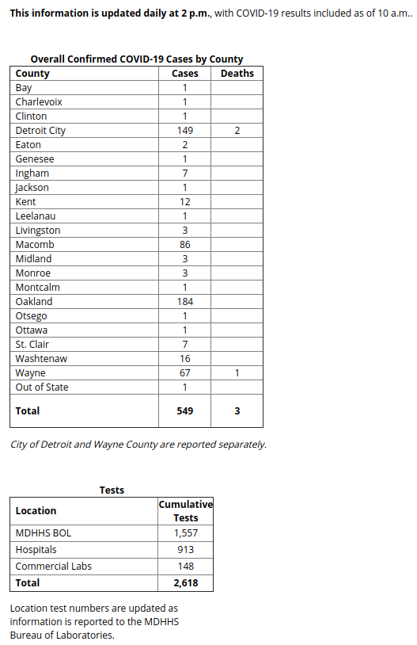
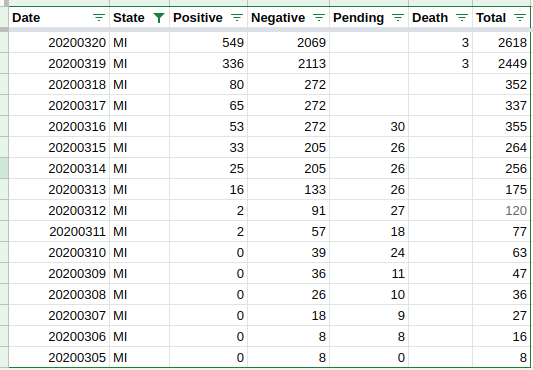

negative counts not necessarily negative when pending data missing
Issue number 29
timeFractal opened this issue on March 20, 2020 at 2:55 pm
on covidtracking.com/data, for the state of MI, I want to point out that since the (-) case counts are inferred, they’re not necessarily confirmed negatives. the reason why (-) cases went down 3/20 could’ve been bc the difference btw total - (+) is a blend of pending and (-) cases. if this inference logic is applied as well for other states, the (-) counts may be overestimated, resulting in false negatives.
I’m not sure what is meant by your interpretation of data lag, as I saw this footnote earlier, “The top-level page seems out-of-date compared to the dashboard.”
My understanding is all of the data, whether top-level page / dashboard, or positives vs total, are in sync. what they mean by the comment is that the data is accurate up to … previously was midnight of the day before. just today they’ve updated it to reflect data up to 10a this morning. but the manual entry of posting the update to the state website isn’t until (at least targeted for) 2p. yesterday the website didn’t get updated till after 3p.
so effectively all the data sets are in sync with one another, but what they’re saying is what you’re seeing on the state web could actually be up to 14 hrs outdated.
I’ve found the counties provide more frequent updates throughout the day if there are news headlines.
hope that helps to clear up the confusion!
Man, thanks for swatting all these
On Mar 20, 2020, at 7:34 PM, Elliott Klug notifications@github.com wrote:
Good catch. It is our policy that once a negative, always a negative but sometimes the state changes how things are reported and we have to adjust accordingly. We are pressuring the States to improve their reporting process so hopefully, these types of issues will go away.
In the case of Michigan, we do not have pending tests to affect things, only the data reported by the state. We have found that sometimes the state will update its data in strange ways. Your point raises an interesting question - if there is a data lag, how should we accommodate it? In this case, it could be a lag in total cases, with a more recent update on positives.
— You are receiving this because you are subscribed to this thread. Reply to this email directly, view it on GitHub, or unsubscribe.
My understanding is all of the data, whether top-level page / dashboard, or positives vs total, are in sync.
To clarify what @careeningspace means: the table on the top-level page currently shows 225 cases. When you click the “see cumulative data” button on that table, you are taken to a page that shows 549 cases.
We interpret “cumulative tests” on the page with the higher case count to mean tests that have returned a result, either positive or negative. One reason to believe these numbers do not include pending tests is that the state issued a press release indicating they would no longer report pending tests. Hence we calculate negatives to be the number of tests reported on this page minus the number of cases reported on this page.
This count may be incorrect. Perhaps the state is reporting number of specimens tested and not number of people tested. Perhaps the test count includes inconclusive and pending tests and not just tests that have returned a positive or negative result.
We try our best to interpret the data that states provide but unfortunately states are not always clear on the precise meaning of their data.
If you have concerns about our data from Michigan I suggest you reach out to the department of health and request clarification on their reporting. Thanks!
I’m still not understanding where the out of sync.ness is? the page w/ the smaller number represents daily count of additional cases from midnight to midnight, or from 10a to 10a as is now the case for the past two days. the page w/ the larger number represents total cases since infection onset.
my personal interpretation of the press release is that it simply means the loss of granularity as the state site was previously providing the breakdown count of pending, referred, etc, hence the word pending was used. I have contacted them for clarification and will follow-up if I hear anything in response.
Good catch. It is our policy that once a negative, always a negative but sometimes the state changes how things are reported and we have to adjust accordingly. We are pressuring the States to improve their reporting process so hopefully, these types of issues will go away.
In the case of Michigan, we do not have pending tests to affect things, only the data reported by the state. We have found that sometimes the state will update its data in strange ways. Your point raises an interesting question - if there is a data lag, how should we accommodate it? In this case, it could be a lag in total cases, with a more recent update on positives.

